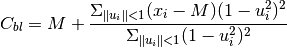
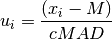

biweight_location¶
-
astropy.stats.biweight_location(a, c=6.0, M=None) [edit on github][source]¶ Compute the biweight location for an array.
Returns the biweight location for the array elements. The biweight is a robust statistic for determining the central location of a distribution.
The biweight location is given by the following equation

where M is the sample mean or if run iterative the initial guess, and u_i is given by

where MAD is the median absolute deviation.
For more details, see Beers, Flynn, and Gebhardt, 1990, AJ, 100, 32B
Parameters: a : array-like
Input array or object that can be converted to an array.
c : float
Tuning constant for the biweight estimator. Default value is 6.0.
M : float, optional
Initial guess for the biweight location.
Returns: biweight_location : float
Returns the biweight location for the array elements.
Examples
This will generate random variates from a Gaussian distribution and return the biweight location of the distribution:
>>> from astropy.stats.funcs import biweight_location >>> from numpy.random import randn >>> randvar = randn(10000) >>> cbl = biweight_location(randvar)